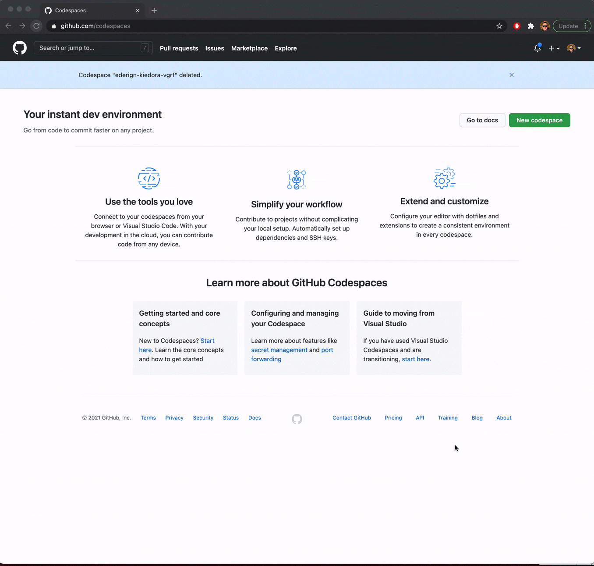
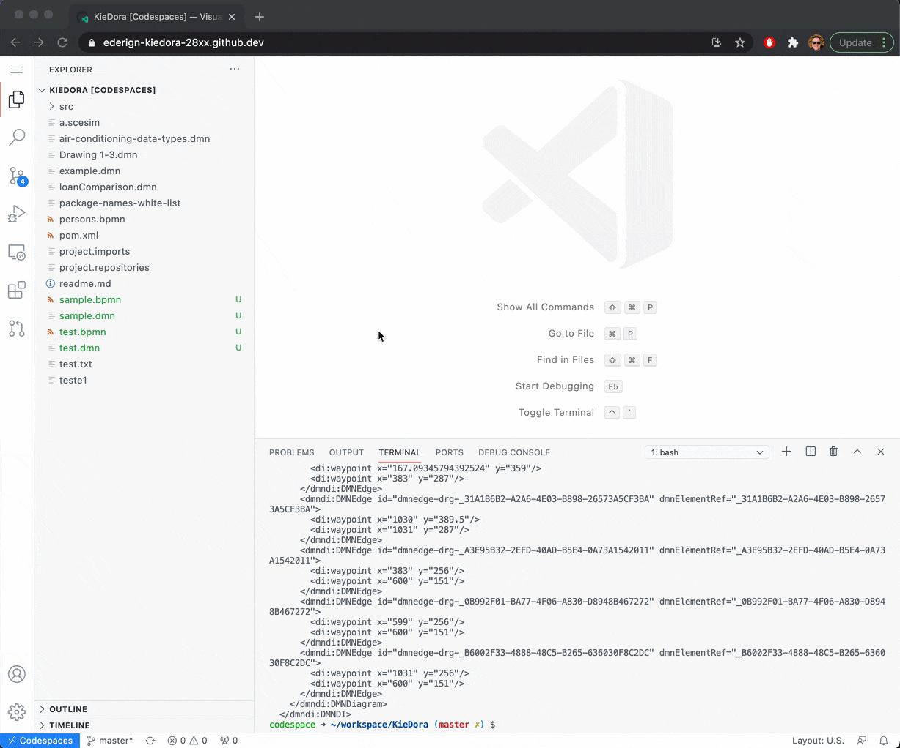
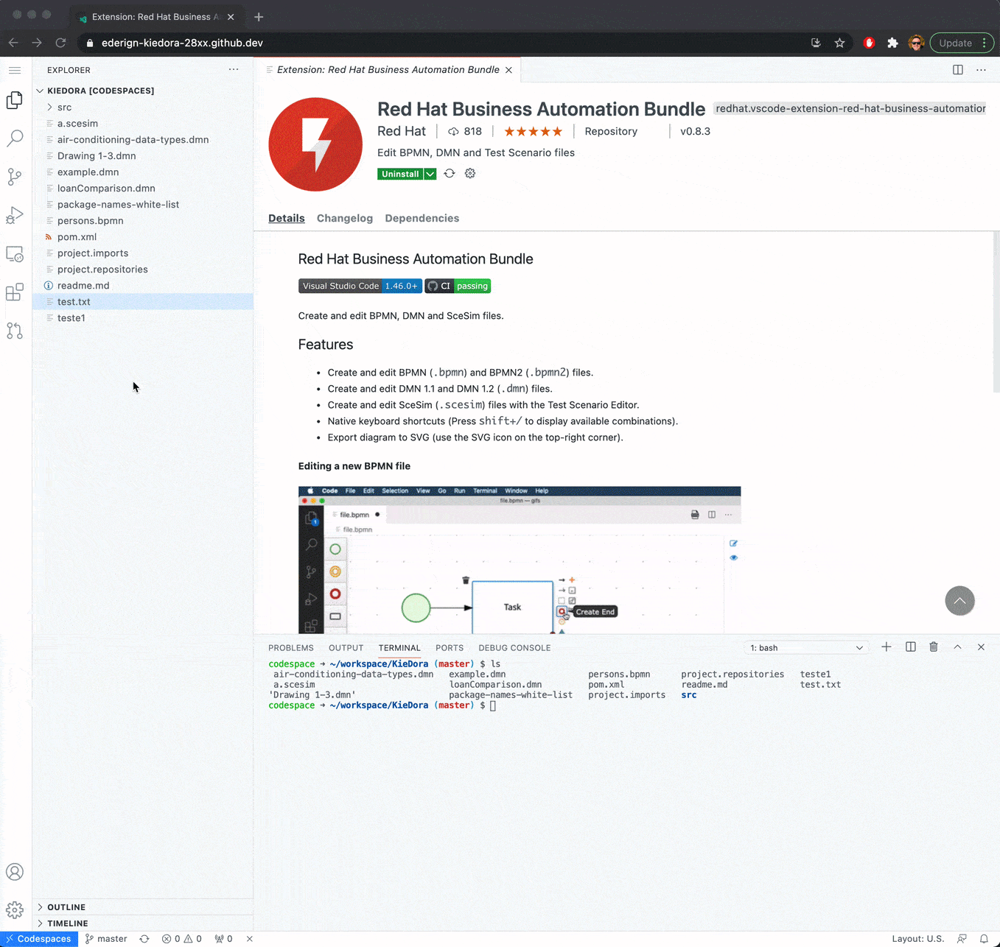
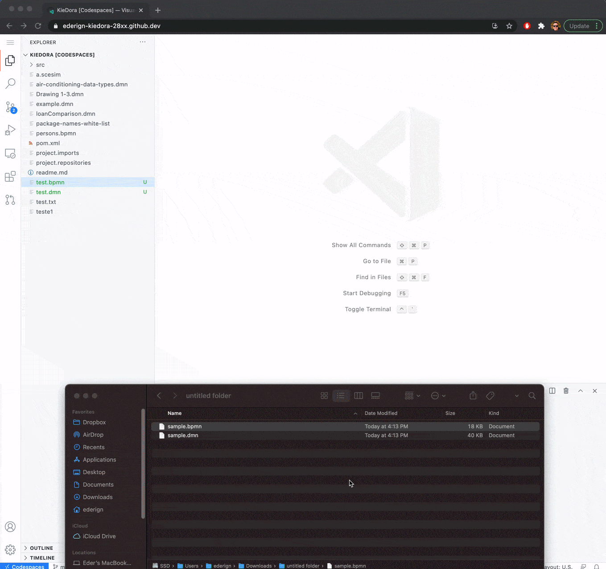

3 steps to author BPMN and DMN assets on GitHub Codespaces
Recently, GitHub launched early access to GitHub Codespaces, an online development environment hosted by GitHub and powered by Visual Studio Code, that allows you to develop entirely in the cloud.
Online development environments are a recent trend in the industry and can potentially be a game-changer for developers. But the question is, can I also develop my Business Automation assets in the cloud?
Yes, you can! Do you want to see it how? Let’s do it in a 3 easy steps:
1-) Create your GitHub CodeSpace
Go to Github Codespaces and create a code space based on any GitHub repository[1]:

[1] If you don’t have access yet, you can request early access here
2-) Install Red Hat Business Automation Bundle
Now your Codespace is live, and you can work on any GitHub repository in an online VS Code. The next step is to install our extensions.
Go to the Extensions menu and search for “Red Hat Business Automation Bundle”. This will automatically install our BPMN and DMN extensions.

3-) Author your BPMN and DMN assets
You are now ready to author your BPMN and DMN assets as any other VS Code asset.

You can also drag and drop any file of your computer into Codespaces, making it super easy to import the assets that you created on dmn.new and bpmn.new.

That’s it! Thanks for reading and I hope you like it. Let’s develop our Business Automation Assets in the cloud.

{kind=link}
{kind=link}
{kind=link}
{kind=link}